|
Indeks: |
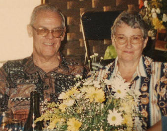
Dit is vir ons hartverskeurend om te berig dat nog 'n Henning egpaar wreedaardig vermoor is. b7.c8.d5.e10.f2. Olivier Johannes Henning *8-3-1940 en sy vrou Anna Susanna Magdalena (Suzette) (gebore Prinsloo 13-2-1941) het vir langer as 30 jaar lank 'n dagsorgsentrum, Die Kruin-uiltjies te Kemptonpark gehad.
Op Sondagmiddag 20 April 2008 was Olivier, Suzette, een van hulle huiswerkers, mev Salome Sithole en dié se seun (26) by die sentrum besig om te werk toe hulle oorval is. Skynbaar het Suzette die voordeur vir iemand gaan oopmaak, wat die vermoede bevestig dat dit iemand moes gewees het wat hulle geken het.
Olivier en mev Sithole is op die toneel dood, terwyl Suzette in 'n kritieke toestand na die Johannesburg hospitaal en die seun na die Tembisa hospitaal afgevoer is. Suzette is egter 'n paar dae later op 27 April 2007 aan haar wonde oorlede. Haar hele skedel was gebreek. Almal is skynbaar met 'n groot, stomp voorwerp, soos 'n piksteel, aangeval.
Die polisie het dadelik 'n soektog begin na 'n mnr. Gerhard van Tonder (29), wat glo inligting kon verskaf oor die omstandighede waaronder hierdie bejaarde egpaar en die huiswerker vermoor is. Intussen het die polisie en familie van die Henning-egpaar bevestig dat die vermeende aanvaller goed bekend was aan die egpaar. Sy vriendin het by die dagsorgsentrum gewerk. Hulle verhouding het egter skeefgeloop en hy het haar aanhoudend by die werk begin lastig val. Daar is oorweeg om 'n hofbevel te verkry om hom te verbied om die dagsorgsentrum te besoek.
Volgens mnr Frik Hefer, skoonseun van Olivier en Suzette het sy skoonma haar oor die man ontferm. Hy is intussen in hegtenis geneem.
Olivier Henning het vanaf 1984 vir baie jare lank as Tesourier op die heel eerste bestuur van die Familiebond gedien en was 'n groot ondersteuner en steunpilaar van die Familiebond. Wat baie tragies is, is dat hul jongste dogter, Avril ook gedurende 1999 vermoor is, toe sy deur 'n voormalige vriend, wat sy kort tevore afgesê het, doodgeskiet is. Hy het homself ook kort daarna om die lewe gebring. Ons innige medelye gaan uit na die broer, susters, kinders en kleinkinders van hierdie geliefde gesin.

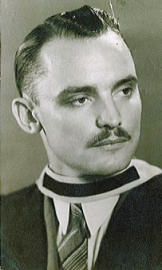
Dit is algemeen bekend dat regters van die hoogste aansien, in alle lande, in die gemeenskap geniet - veral regters van die Hooggeregshof.
Ons was bewus daarvan dat b1.c6.d3.e13.f6. Johannes Stefanus Henning *22-4-1922 'n regter van die Hooggeregshof - Natal Afdeling, was. Hy is egter reeds in 1973 op 51 jarige leeftyd oorlede en ons kon, ten spyte van spesiale pogings, nie met enige van sy familielede kontak maak nie.
Ons was bewus dat sy weduwee, Helen Annette (gebore Crossley) na sy dood, met sy oudste broer, Pieter Hendrik *17-1-1913, wat ook 'n wewenaar was, in die huwelik getree het.
Johannes Stefanus se jongste dogter, Joanne, wat skynbaar in Brittanje woon, het onlangs die Henning webwerf op Internet besoek. Nadat sy met ons kontak gemaak het, het sy op ons versoek 'n foto van haar pa, ma en oom Pieter Hendrik vir ons gestuur. Al drie hierdie foto's is reeds op die Henning Laserskyf (CD) opgeneem is.
| 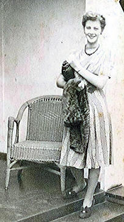 | 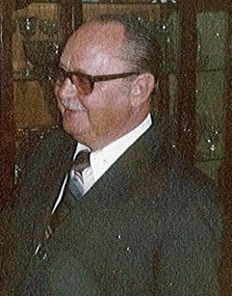 |

Soos gebruiklik meld ons graag die name van diegene wat donasies van R200.00 en meer oor die afgelope drie maande gemaak het:
Prof JJ (Josef) Henning van Hartenbos - R200.00
Mnr JJ (Japie) Henning van Roodepoort - R200.00
Mev EE (Ellen) Naude, lewenslange lid van Rosslynn - R200.00
Mnr PB (Pieter) Henning van Sinoville, Pretoria - R300.00
Mnr JAG (Koos) Henning van Nylstroom, nuwe lid - R250.00
Dr MEJ (Tjol) Henning van Lyttelton, Centurion - R200.00
Mnr GS (Gideon) Henning van Strand, Voorsitter van die Familiebond - R300.00
Mnr CB (Neels) Henning van Tampa, Florida, VSA - $200 (R1411.00 min R100 bank)
Dan het iemand op 2 Junie 2008 'n kontantdeposito van R250.00 by die Modimolle tak van ABSA Bank gemaak, sonder om sy/haar naam of 'n verwysing te verstrek.
Ons noem ook graag die name van daardie lede wat pligsgetrou voorgaan om maandeliks deur middel van 'n debietorder by te dra:
Mnr IH(Henning) Pieterse van Rietvalleipark, Pretoria
Mnr JH (Jan) Henning van Glenstantia, Pretoria
Hierdie gereelde bydraes is van groot waarde vir die Familiebond. Lede word graag aangemoedig om op hierdie wyse by te dra. 'n Klein bedraggie van so min as R20.00 per maand, wat u later nie eens meer voel nie, help om die Familiebond kop bo water te laat hou.

Die genealogie- en erfenisfees wat op 10 Mei 2008 by die Voortrekkermonument gehou is, was 'n reuse sukses - en die Henning Familiebond het 'n groot rol gespeel in die sukses van die fees. Ons stalletjie was beslis een van die mees kleurryke en interessantste van die meer as twintig uitstallers. Gideon Henning van die Strand (Voorsitter) en Olivier Henning (Bondsekretaris) het van die Kaap af opgevlieg Pretoria toe om die Henning stalletjie te beman.
Van vroeg af het verskeie Hennings en ander belangstellendes ons stalletjie besoek.
Ons het aan die organiseerders voorgestel dat die fees 'n jaarlikse instelling, op Erfenisdag op 24 September by die Voortrekkermonument moet word. Ons kulturele gemeenskap het ook rede om op 'n positiewe wyse ons voorsate te gedenk en ons erfenis te vier en nie net die mense van die "nuwe Suid-Afrika" nie.
| 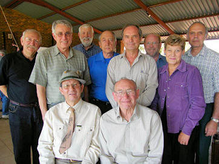 | 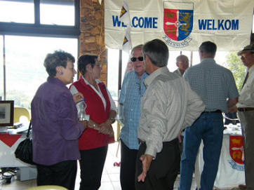 |
| 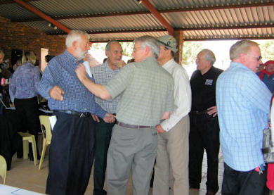 | 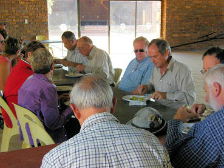 |

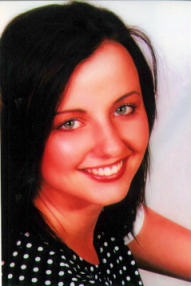
In die Februarie Nuusbrief het ons die name van die 2007 Henning matrikulante en veral diegene wat uitsonderlik presteer het, verstrek.
Prof Josef Henning het daarna vir ons laat weet dat sy kleindogter, Nina ook matriek aan die einde van 2007 met ses onderskeidings geslaag het. Tydens die telefoongesprek tussen Josef en Bondsekretaris Olivier het daar skynbaar êrens 'n kortsluiting gekom, want Nina se van is SNYMAN en nie SWART, soos wat Olivier in die beriggie in die Mei Nuusbrief vermeld het nie. Ons het seker aan Nina Swart, die pragtige Afrikaanse aktrise gedink - maar as mens na die foto van Nina Snyman kyk, is dit duidelik dat sy net so pragtig as Nina Swart is. JAMMER NINA VIR DIE FOUTJIE!. Nina studeer tans B Sc aan die NW Universiteit (Potchefstroom Kampus).

| 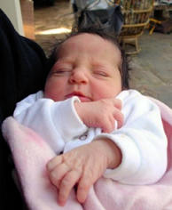 | 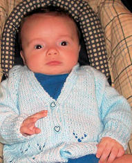 |
b5.c1.d3.e1.f15.g3.h1. Johannes Alwyn Henning (noemnaam Alwyn) is op 23 April 2005 met Maria Petronella Reyneke getroud. Maria het vier pragtige dogters uit 'n vorige huwelik gehad, wat ten volle deur Alwyn aangeneem en as Hennings herregistreer is.
Alwyn en Maria het egter nou saam 'n babadogtertjie ryker geword - die kleine Helena, wat op 13 Mei 2008 gebore is.
Alhoewel b1.c6.d3.e11.f3.g1.h1.i1. Jason Neels Henning reeds op 26 Julie 2007 gebore is, vermeld ons sy naam spesiaal. Hy is in Durham, Noord Carolina in die VSA gebore. Sy pa, Reyco Henning is 'n Professor in Fisika aan die Universiteit van Noord-Carolina en sy ma, Cara het self 'n Doktorsgraad in Fisika. Hy is die eerste Henning van die Peter Henrich Henning stam, waarvan ons weet, wat as 'n Amerikaanse burger gebore is.

Begin Junie 2008 ontvang ons 'n E-Pos uit Amerika van b1.c6.d3.e11.f3.g1. Cornelius Belthaser (Neels) Henning *9-4-1944. Hy, sy vrou Bernice en hul gesin het ongeveer elf jaar gelede na die VSA ge-emigreer en hy en Bernice woon nou in Tampa, in die staat Florida, terwyl hulle drie kinders, waarvan twee intussen getroud is, elders woon. Hier is beslis 'n gesin wat reeds diep spore in 'n hoogs kompeterende land, soos Amerika, getrap het en waarop die Henning familie as geheel, baie trots kan wees.
Neels self werk as elektroniese ingenieur en ontwerp mikrorekenaars vir die beheer van masjinerie, soos vurkhysers en konstruksietoerusting.
| 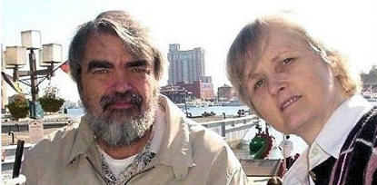 | 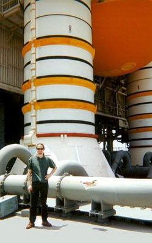 |
Hul seun, Reyco het matriek geslaag aan die Hoërskool Waterkloof, Pretoria, met ses onderskeidings. Hy skryf die Amerikaanse universiteits-toelatingstoets (die sogenaamde SAT toetse wat elke jaar wêreldwyd by Amerikaanse Ambasades afgelê word) en is geplaas in die top 1% van kandidate wêreldwyd. As gevolg hiervan het hy 'n beurs gekry om te studeer aan die Universiteit van Denver in Colorado, waar hy sy BS graad in Fisika en Wiskunde slaag (Magna Cum Laude). Hy het toe 'n beurs gekry vir Doktorale studies aan die Massachusets Instituut van Tegnologie (MIT). Na hy sy Doktorsgraad in Fisika behaal het, het hy vir 'n tyd lank navorsing gedoen in die veld van sub-atomiese partikels (neutrinos) en werk nou as Professor van Fisika aan die "University of North Carolina". Tydens sy studies aan die MIT het hy kontak gehad met die Amerikaanse ruimteprogram, omdat hy gewerk het aan een van die eksperimente wat NASA moes vervoer na die Internasionale Ruimtestasie. Hy en sy gesin woon te Durham, Noord Carolina. Sy vrou, Cara (gebore Cartwright) het self 'n Doktorsgraad in Fisika. Dit is hulle babaseuntjie waarvan ons op bl 5 en 6 berig.
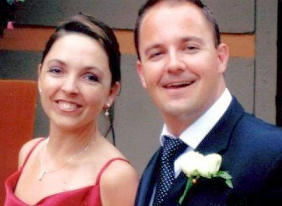
Neels en Bernice se dogter, Jolette is in die VSA getroud met nog 'n Suid-Afrikaner, Ettienne van Vuuren. Jolette het ook matriek geslaag aan die Hoërskool Waterkloof in Pretoria, maar hulle het kort daarna verhuis na die VSA. Jolette het haar BA graad in Grafiese Kuns behaal aan die "University of Tampa", Summa Cum Laude. (Summa Cum Laude is die hoogste graad van onderskeiding in die VSA). Sy het vir 'n paar jaar gewerk by 'n advertensie firma en toe haar eie besigheid begin. Sy is 'n suksesvolle besigheidsvrou en haar ma, Bernice, werk vandag vir haar.
Neels en Bernice se jongste dogter, Anél matrikuleer aan die Irmo Hoërskool in Columbia in die staat Suid Carolina. Hierna het sy die graad BA in Grafiese Kuns behaal aan die "Maryland Institute College of Art". Sy woon en werk in New York vir die "Girl Scouts of America". Sy is nog nie getroud nie.
Neels skryf voorts: "Mens moet ook nie die mag van heimwee onderskat nie. Die land wat ek agtergelaat het en my Afrikanerkultuur lê diep in my hart. Afrikaans is 'n pragtige taal en Suid-Afrika is 'n pragtige land. Ek het nou die dag 'n onderhoud met 'n ou Chinees gesien wat al jare in Amerika woon. Toe hulle hom vra waarom hy dan nooit terug is China toe nie, het hy gesê: "I don't have to go back. I carry China in heart wherever I go. She is always with me." Dit is baie waar. Mense wat dink hulle kan hulle wortels sommer afskud in die buiteland, is oppervlakkig en verloën hulself. Ek sal waarskynlik nooit teruggaan Suid-Afrika toe nie, want dit sal my hart breek om te sien wat van die land geword het. Maar my verlede en kultuur sal ook vir altyd by my bly. Ek kan altyd in my verbeelding teruggaan na dit wat was, al is dit nie meer nie.
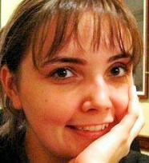
Aan die ander kant het Amerika aan my kinders geleenthede gebied wat hulle nooit elders sou gehad het nie. Ek is baie trots op die feit dat hulle die geleenthede met albei hande gegryp het en die beste daarvan gemaak het. Ons het ook twee wonderlike skoonkinders. Cara aanvaar ons vir wat ons is en respekteer ons kultuur. Sy leer ook vir Jason om dit te waardeer. Ettienne is 'n baie charismatiese seun en hy draai mense wat hy ontmoet om sy pinkie binne minute na hy hulle ontmoet het. Hy het onmiddelik in Amerika aangepas soos 'n vis in water. Ons is baie gelukkig met beide van hulle."

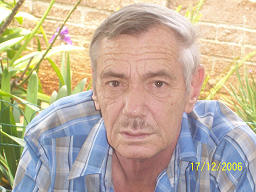
Ons het met leedwese kennis geneem van die afsterwe van b1.c6.d3.e7.f8.g2. Pieter Hendrik Henning *2-10-1949 op 29-2-2008. Pieter en sy vrou Hannetjie het te Doornpoort gewoon. Pieter is in 1 Militêre Hospitaal, Voortrekkerhoogte, Pretoria oorlede. Hy het skool gegaan in Burgersdorp, Noord-Oos Kaap, waarna hy Weermag toe is. Daar het hy vir lang tye grensdiens verrig gedurende die grensoorlog.
Hy het sport baie geniet en was verskeie kere enkel kampioen in Rolbal. Hy het as 'n Eerste klas Sersant-majoor uitgetree in Mei 2002. Sy gesondheid het egter vinnig versleg.

'n Redakteur van enige tydskrif/koerant/Nuusbrief is verwaand as hy oor homself skryf, maar vandag kan ek nie anders nie. Ek is dankbaar om te berig dat ekself hierdie Nuusbrief op tyd die lig laat sien het.
Die middag van 13 Junie 2008 het ek 'n beroerte-aanval gehad terwyl ek en my vrou inkopies in Worcester gedoen het. Gelukkig kon my vrou Charlotte en ander helpers my spoedig by 'n hospitaal kry en kon behandeling binne 'n half uur na die aanval begin. Dit het verseker dat ek na alle waarskynlikheid volkome sal herstel. My linkerkant was verlam en ek kon nie praat nie. Tans is slegs my spraak aangetas en kan ek fisies nie al die dinge doen wat ek graag wil doen nie, maar ek het 'n regterhand wat werk en my verstand is (skynbaar) nie aangetas nie. Op 'n ligter trant moet ek noem dat my linker "lamboud" reeds sterker is as my regter "ysterbout(d)", waar ek verlede jaar 'n heupvervanging ondergaan het.
Dus is ek baie dankbaar en trots daarop om hierdie uitgawe van Ons Haantjie self en sonder hulp te kon voltooi.Ek glo dat ons Hemelse Vader nog 'n taak vir my het. Dit sou 'n hartseer dag wees as die Familiebond, wat oor meer as 25 jaar tot een van die beste Familiebonde in die wêreld opgebou is, tot niet moes gaan, omdat ons nie 'n opvolger vir die bondsekretaris geidentifiseer het nie.
Ek is dus verheug om aan te kondig dat ons nou twee Henning jongmense geidentifiseer het, wat bereid is om by my oor te neem wanneer ek nie meer in staat is om hierdie taak te verrig of die bestuurskomitee nie meer tevede met my werkverrigting is nie. Ek moet hulle nog net oplei om die administrasie van die Familiebond te kan oorneem.
b7.c8.d8.e3.f5.g1. Stephanus Rudolf (Rudolf) Henning *17-9-1972 is 'n ou bekende. Hy dien die afgelope nege jaar as 'n addisionele lid op die bestuurskomitee en het die programmering van die Henning Familiekroniek op Laserskyf behartig en het die databasis waarmee ons die Familiebond administreer ontwerp. Hy het my inderwaarheid geleer om die stelsels te gebruik. Rudolf se suster, Cornelia Nicolina (Nelia) *14-2-1975, 'n gekwalifiseerde verpleegsuster, het ingewillig om die administrasie en finansies te behartig. Rudolf sal die Familiekroniek op datum hou en hulle niggie, Jannetta Steyn, van Durham, Engeland sal die webwerf op Internet in stand hou. Oorhoofse bestuur sal steeds deur die Bestuurskomitee onder voorsitterskap van Gideon Henning van die Strand, wat tydens Jaarvergaderings verkies word, behartig word.
| 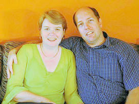 | 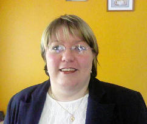 |

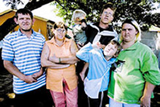
In 'n televisie-uitsending gedurende Mei 2008 oor die nood van baie van die voorstad Wolmer in Pretoria se inwoners, het ons vir die eerste keer verneem van die nood van die gesin van b7.c13.d3.e1.f1.g8. Stephanus Petrus Henning *4-5-1956. Dié familie is almal met katarakte gebore. Almal sien baie sleg en dit belemmer hul vermoë om te konsentreer. Finansieël kan hulle dit nie bekostig om almal te laat opereer nie. Daarna het verskeie koerante ook oor hierdie gesin berig. Oproepe het by die vakbond Solidariteit se Helpende Handfonds ingestroom. 'n Woordvoerder van die fonds sê hulle is oorval met oproepe van weldoeners wat die familie wou help.
Die Pretoriase Ooginstituut het onder meer aangebied om die hele gesin se katarakte gratis te verwyder. Die verwydering van die familie se katarakte is deel van hulle jaarlikse uitreikprogram. So het daar letterlik lig aan die einde van die spreekwoodelike donker tonnel vir hierdie gesin begin skyn.

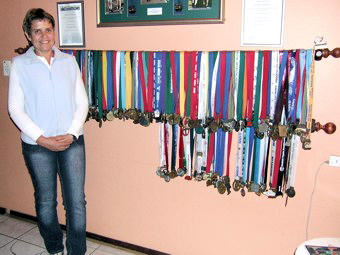
Mary-Ann Henning *28-5-1963, vrou van b7.c8.d8.e1.f2.g2. Stanley Henning is sekerlik een van die fikste Hennings in Suid-Afrika. Mary-Ann bedryf 'n swemsentrum by haar huis in Wierdapark, Centurion, waar sy in 'n groot verhitte swembad, swemlesse en akwarobiese oefeninge aan volwassenes en kinders bied. Geneeshere verwys selfs pasiënte na haar vir spesifieke akwarobiese oefeninge.
Mary-Ann is egter 'n fanatiese langafstand atleet, wat aan bykans alle langafstand pad- en veldwedlope deelneem - en elke keer verwerf sy 'n medalje of een of ander toekenning. Sy het reeds heelwat meer as 600 medaljes by hierdie wedlope verwerf.
Verlede jaar het Mary-Ann die eerste keer die Comrades Marathon aangedurf, maar moes na 65 kilometers tou opgooi, weens 'n besering, waarmee sy die wedloop begin het. Hierdie jaar het sy probeer seker maak dat sy nie enige beserings of siektes het nie. Toe tref die noodlot haar weer - na 79 km en vyf kilometers voor die eindstreep het sy so hewige krampe in haar bene gekry, dat sy die Poly-shorts afsnytyd met 30 sekondes gemis het - maar dit is nie einde van die wêreld nie. Volgende jaar gaan Mary-Ann weer probeer.